The Staunton set
The original Lichess 3D pieces, and our work to recover them as 3D models. Choose a piece to compare reference candidates. The queen also has a 3D reconstruction to explore.
KingCompare candidates ↗
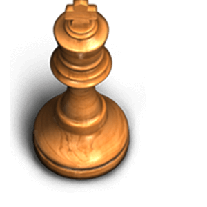
White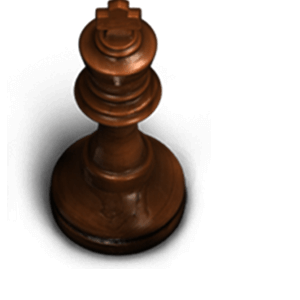
BlackQueenReview queen ↗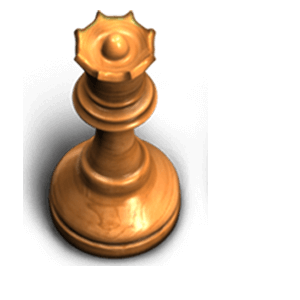
White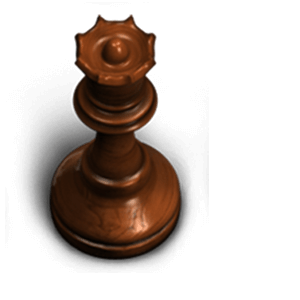
BlackRookCompare candidates ↗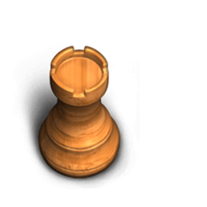
White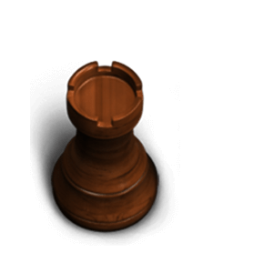
BlackBishopCompare candidates ↗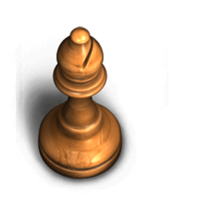
White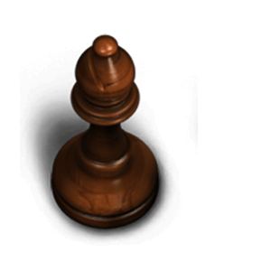
BlackKnightCompare candidates ↗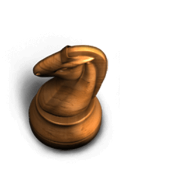
White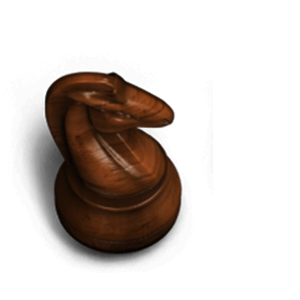
BlackPawnCompare candidates ↗White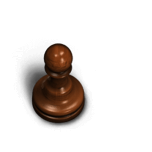
BlackOriginal reference images: Lichess · Staunton 3D set